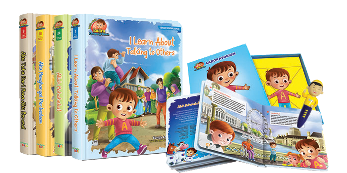

LITTLE ABID (Balita Cerdas & Sholeh)

Produk baru dari penerbit Cordoba kids yaitu buku LITTLE ABID – Balita Cerdas & Soleh, buku yang mengusung konsep positive parenting , more power full parenting with heart ini membantu ayah bunda menyiapkan pola pengasuhan. Selain itu buku ini rancang dengan menggabungkan konsep pendidikan anak dalam islam dan keilmuan modern yang mencakup 7 aspek pendidikan anak dalam islam serta 9 sisi kecerdasan majemuk.
Keunggulan produk
★ Meliputi 4 topik penting pendidikan anak : basic knowledge, life skills, general values, dan spiritual values
★ Mengangkat tema krusial pendidikan anak : pendidikan seksual, pertolongan pertama pada kecelakaan, menghargai perbedaan, serta beragam profesi yang dapat menjadi cita – cita anak
★ Bentuk tulisan yang ringan, imajinatif, riang, dan sarat makna ; 8 buku berbahasa inggris dan 19 buku berbahasa Indonesia.
★ Dilengkapi dengan buku catatan untuk Ayah Bunda yang memaparkan tentang konsep pendidikan anak usia balita
★ Dapat dibaca e-pen dalam dua bahasa : Inggris dan Indonesia
★ Boardbook , full color, dan rounded tip hard cover.
★ Bonus : poster watch me grow, puzzle set, dan container truck yang sekaligus bisa dijadikan sarana bermain anak anak
7 Aspek pendidikan anak dalam islam
1. Aspek keimanan
2. Aspek moral
3. Aspek fisik
4. Aspek akal
5. Aspek kejiwaan
6. Aspek social
7. Aspek seksual
9 kecerdasan majemuk
1. Kecerdasan logis : matematika
2. Kecerdasan visual : spasial
3. Kecerdasan interpersonal
4. Kecerdasan intrapersonal
5. Kecerdasan verbal : linguistic
6. Kecerdasan kinestetik
7. Kecerdasan musical
8. Kecerdasan musical
9. Kecerdasan naturalis
10. Kecerdasan eksistensial
Seri komplit Little Abid:
★ BASIC KONOWLEDGE
1. I learn about talking to athers
2. I learn about time
3. I learn about moving around
4. I learn about sounds
5. I learn about textures
6. I learn about taste and smell
7. I learn about colours
8. I learn about math
★ LIFE SKILLS
1. Aku Tahu Darimana Aku Berasal
2. Aku Tahu Hari dan Bulan
3. Aku Mandi Sendiri
4. Aku Makan Makanan Sehat
5. Gigiku Sehat
6. Aku Berani Tidur Sendiri
7. Aku Belajar Pertolongan Pertama
8. Aku Anak Percaya Diri
★ GENERAL VALUEs
1. Jujur itu Hebat
2. Aku Menghargai Perbedaan
3. Aku Suka Berbagi
4. Aku Sayang Ayah Bunda
5. Aku Anak Penyayang
6. Aku Berbeda dengan Syafa
7. Aku Bangga pada Mereka
★ SPIRITUAL VALUES
1. Allah Maha Hebat
2. Rasulullah Idolaku
3. Aku Rajin Shalat
4. Aku Rajin Mengaji